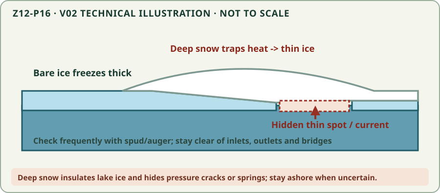

Z12-P16 · Extreme environments · Adapted historical material
Recognize how snow blankets insulate thin ice and hide open holes
Understand how fresh snowpack slows freezing, depresses ice under weight and conceals dangerous openings.
When it applies · Snow-covered lakes, ponds, marshes and winter shorelines after snowstorms.
Equipment · Shoreline vantage and land-only travel plan.

Actions
- Understand snow insulation physics: an early snow blanket acts like a winter quilt over thin ice, trapping water heat underneath so the ice thickens far more slowly than cold air temperatures suggest.[X01, E12]
- Understand snow weight and slush: heavy snow pushes thin ice down below the waterline, forcing lake water upward through cracks to form hidden slush layers and weaker white snow-ice.[X01, E12]
- Recognize that drifting snow bridges over pressure cracks, spring holes, old angler holes and open water pockets, disguising lethal plunge hazards as flat white walking ground.[X01, E12, N07]
Failure recognition · Assuming two weeks of 10°F weather after a big November snowstorm guarantees thick safe lake ice underneath the snow blanket.[X01, E12]
Verify · Stay on verified dry land whenever snow covers frozen waterways so hidden slush, snow-bridged holes and insulated thin spots cannot trap the party.[X01, E12, ED]
Stop or change course · Snow-covered ice with slush seepage, uneven drifts or unverified freeze history is an immediate stop—detour on solid ground.[X01, E12]
Evidence and editorial notes
- E12 · Minnesota DNR · Ice Safety (current web edition)
- Section: Ice Safety > basic precautions · Conditions: Minnesota ice edges and travel routes
Support: No ice is universally safe. Strength can differ over short distances; appearance or tracks alone cannot establish a safe crossing.
Limitations: Currents, springs, snow insulation, and freeze-thaw cycles weaken ice invisibly. · Conflicting evidence: None; mandates shore-bound detour for foundational walking parties.
Editorial note: Maintains strict separation from specialized B013 ice chapters. · Specialist reviewer: Ice safety and search and rescue
Primary source · checked 2026-11-24 - N07 · NWS · Fog Safety (current web edition)
- Section: Fog Safety > Visibility Loss and Travel Hazards · Conditions: Dense fog, valley mist, sea fog and blowing-snow whiteout
Support: Fog and whiteout collapse visual landmarks and depth perception rapidly, causing disorientation and unintentional terrain/traffic hazards; halt exposed travel early and rely on verified checkpoints or stay put.
Limitations: Compass bearings alone cannot reveal hidden cliffs, thin ice or drop-offs in zero visibility. · Conflicting evidence: Aligns with B014-P11 whiteout guidance.
Editorial note: Supports whiteout/fog stop thresholds and short-leg navigation boundaries. · Specialist reviewer: Meteorology and search and rescue
Primary source · checked 2026-11-24 - X01 · Minnesota DNR · General Ice Thickness Guidelines (current web edition)
- Section: General Ice Thickness Guidelines > New Clear Ice Only · Conditions: Minnesota lakes and ponds during stable winter freezing
Support: Agency thickness guidelines apply ONLY to new, clear solid ice and are NEVER a guarantee of safety; white snow-ice is roughly half as strong, and currents, springs, inlets, outlets and snow cover create hidden thin zones.
Limitations: No ice is 100% safe; one drilled thickness check does not clear an entire crossing route. · Conflicting evidence: Directly reconciles B013 P01–P05, P11 and P17 with MN DNR warnings.
Editorial note: Enforces non-guarantee ice boundaries across Z12. · Specialist reviewer: Ice safety and winter search and rescue
Primary source · checked 2026-11-24
Source lineage · B013-P10 snow hides holes and MN DNR ice; adapted historical material · Classification · Adapted historical material.